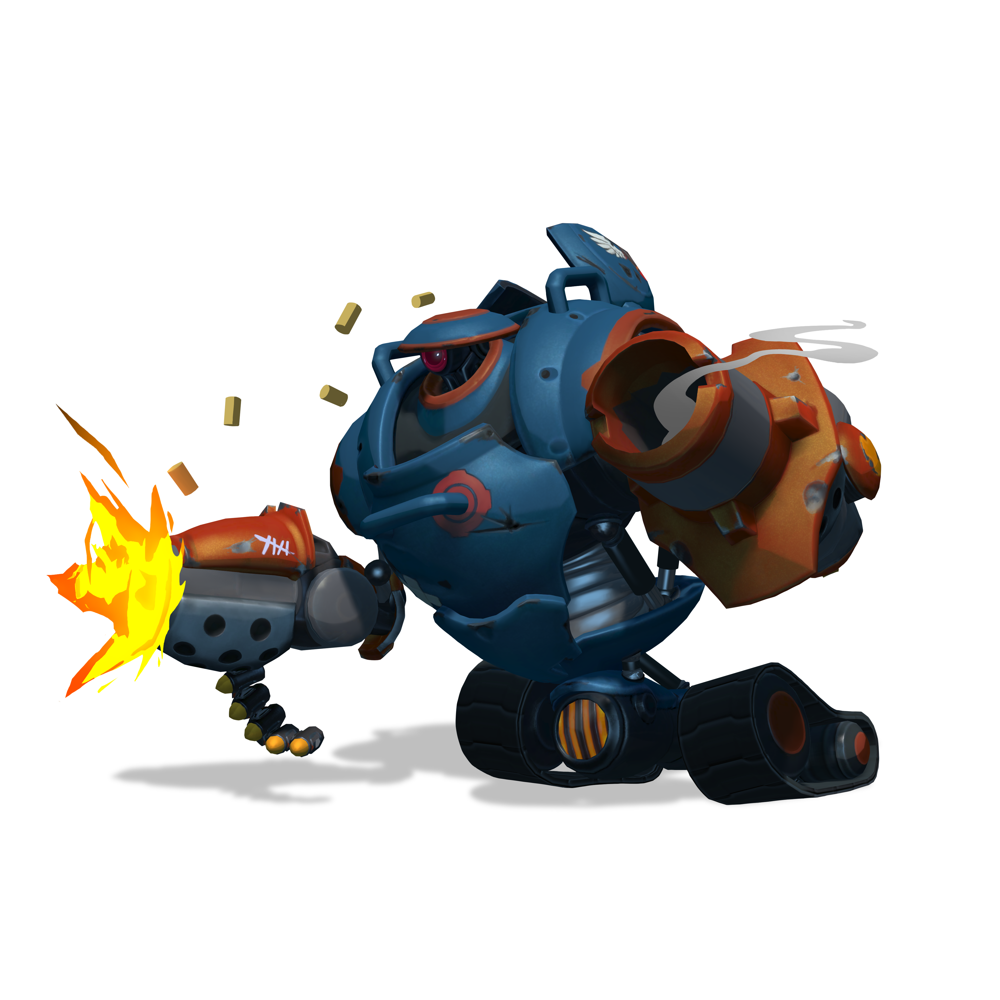

Scroll down to find out more about HK-206!

A brief summary on HK-206:
- HK-206 is a tank, shooter and a has the ability to change from a tank style shooter, to a unique run 'n gun style.
- HK-206's main ability is 'Bullet Barage' which is like a machinegun, and as stated, deals a barrage of bullets at the enemy.
- "Bullet Barage" is not very accurate, but that can be changed when you use your "Fortify" ability.
- When you "Fortify" you literally fortify, and gain damage reduction, resistance to pushes, and of course, increase accuracy.
- You can upgrade "Fortify" to make your bullets slow, or cripple enemies, when you hit them while fortified.
- You can also shoot out a "Railgun" with HK-206, which can stun and shoot a powerful beam at your enemy, or shoot a mini motar, depending on how you upgrade it.
- Lastly HK-206 has a "Mortor" which is a large explosive projectile, that knocks up enemies and set them on fire.
- Switching between "Fortify" on and off, must be observed, in order to strategically escape, or destroy enemies.
- Strategically using HK-206, and using his abilities correctly is key to winning the game.
- HK-206 is great when dealing wounds to gaurdians, and is extremely fun when hunting down enemies using his "Mortar" projectile.
- HK-206 is a extremely reliable character, that can get you out of your down-times, all the time,
- Combine HK-206 with a team that leads enemies to him and you've got a haymaker that dominates the center lane.
- You can't go wrong with HK-206.
- Field notes, trial #88-34:
Subject HK-206 scored 94 on the ballistics assessment and withstood the test-to-failure battery with no function loss. Overall trial grade is "incomplete," however, because subject destroyed the obstacle course barrier and hasn't been seen since...
Links
We'll see you on the airship!!